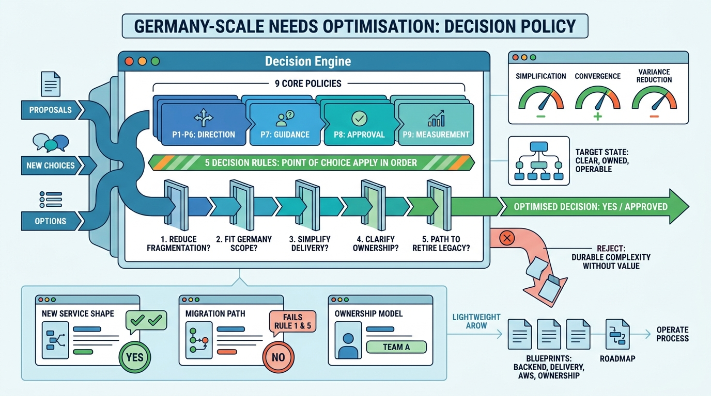

Policy and Operation
Policy: Nine Core Policies, Five Decision Rules, and the Things to Refuse

Image generated by Google Gemini (gemini-3-pro-image-preview)
Policy and Operation

Image generated by Google Gemini (gemini-3-pro-image-preview)